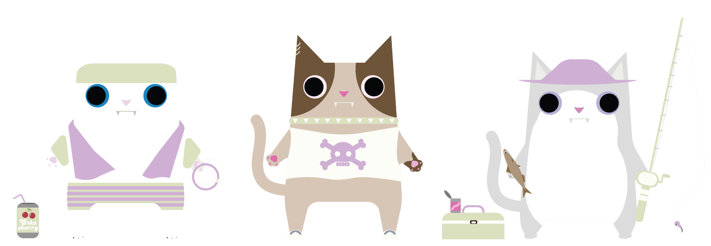

Reagan Smith
Mountain Biking. Cats. Web Development. Graphic Design. Boating. Swimming.
These are a few of my favorite things
Change Website Theme

Website Projects
Bountiful Foods
Spring 2023
I really enjoyed creating this website. I was given restraints on what the website needed to have on it and what sources I could draw from. I was asked to include weather from a weather API and have the option for the user to create a smoothie. The options for the smoothie and nutritional information comes from a JS array. This website taught me how to use Javascript within a website.
Visit SiteStar Chamber of Commerce
Spring 2023
This website was for my webfrontend class at BYU-I. I was asked to choose a city and re-do the website for it. I also was given an outline for the web page that I was asked to recreate using CSS, HTML and Javascript. This project taught me more about how to utilize Javascript for your websites.
Visit Site
CSE Motors
Summer 2023
This website was for a Web Backend Development class. We used MVC to create a car website that drew from a database to get information on the different vehicles the dealership has available. I was nervous about learning backend development but I found it to be very fun and loved the problem solving aspect to it. I also loved working with SQL and MVC.
Visit Site
Broken Oar Rafting
Fall 2021
This was one of the very first web pages I created with HTML and CSS. It was part of what sparked my interest in web development. I had a fun time creating this website and using css makes it fabulous. This site taught me more about the power of grids and layouts to make a website.
Visit Site
Save Your Home
Fall 2022
Something I am very passionate about as a person is the ocean and marine life. For this website I was asked to pick or create a nonprofit and create a website for it. I picked taking care of our ocean because it is something I am very passionate about. I enjoyed picking the color pallet for this site as well and designing the layout and logo.
Visit Site
JS Madlib
Spring 2023
I do not come from a coding background but recently picked it up a few years ago in school. I had no experience with JavaScript and I am still learning. In one of my classes for my final project I created a fun JS madlib for the user to play or participate in. This project pushed me out of my comfort zone and made me fall in love with JS.
Visit Site
Css Zen Garden
Fall 2022
This was for an Advanced CSS class where we were asked to take what we had learned and apply it to the CSS zen Garden. The theme I went with was circus because I thought it would be fun and different. I tried to create a fun website using css grid, border-radius and animations. This project was a great reminder of the variety of things CSS can do to alter a website.
Visit SiteExperience
☞ Most of my experience to this point is what I have showcased above and done in my classes. I have loved the classes I have taken because they have taught me different aspects of web design and development. Through this I have been able to figure out what I like most. I have learned I like web development the most and specifically working with CSS, HTML and JS. I also learned that backend development is very fun and I like working with SQL.
☞ I am currently a teacher's assistant for Web Front End Development I at Brigham Young University Idaho. My job involves grading students' code and assignments. I also help the students work through problems with css, html, javascript and github.
☞ Another thing I have done is work with Triguard Pest Control. I have helped do a lot of different designs for them. I have created a variety of fliers, t-shirts, banners, social media posts, and helped with their marketing website. I have worked with them for around 2 years now and would consider myself their one call graphic designer.
School & Classes
I am a senior at Brigham Young University-Idaho. My degree is in web design and development with a minor in computer science. I graduate in April 2024.
• Web Frontend Development • UI Eval and Design • Web Backend Development • JavaScript Language • Web Fundamentals • Advanced CSS • Programming Building Blocks • Programming W/ Functions •Intro to Databases •UX Design •Graphic design 1 & 2 • Typography • Creating Online Media •
Skillz
CSS 1.5 years
HTML 1.5 years
Python 1.5 years
JavaScript 1 year
SQL 1 year
C# .5 year
About Me


Hello and welcome to my portfolio. My name is Reagan Smith. I have been married for a little over 2 years. I have the cutest cat in the world named Chaos. I am from Denver, Colorado but have lived in Utah, Idaho and Washington since being married. I have a certificate in graphic design and while accomplishing that I developed a love for web development. I graduate from BYU-Idaho in April 2024 with a degree in Web Design and Development and a minor in Computer Science. I love working with CSS, HTML and JavaScript. I also love using SQL and databases. I want to make powerful websites that excite others and are user friendly. I love what I do. I hope we get the chance to work together:)